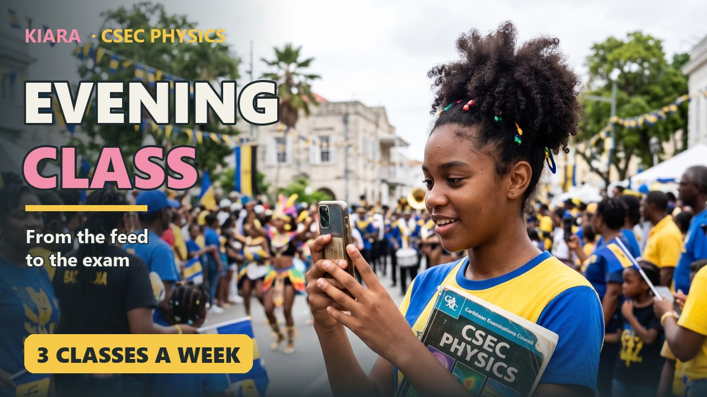

Kiara Best, 16, lives in St John, on the east of Barbados, with her mother, her grandmother ('Granny') and her brother Dante (19, an apprentice electrician). Her father lives in Brooklyn and sent the phone she uses for everything.

Goal: At least Grade II in CSEC Physics, May-June 2027, aiming for Grade I.
3 of 69 sessions done. Next: Tuesday 1 December 2026, Graphs That Tell the Truth.
Weeks 1-2: Foundations
Mon 23 Nov 2026, week 1 Episode 1: Meet KiaraCheckpoint: Diagnostic Back story, the phone, the exam in one picture, the diagnostic. Sheet: 4/14.
Kiara: 4 out of 14 on these eight, 14/30 on the whole test. Strong on sound and light!
Wed 25 Nov 2026, week 1 Episode 2: The Diagnosis and the Plan Skill profile, five weaknesses with evidence, two habits, the 23-week plan, a new week. Sheet: 7/7.
Full marks on all three. Two ticks for the fridge calendar!
Sat 28 Nov 2026, week 1 Episode 3: Formula, Fill, Finish Calculations that score: density, units and the water bucket. Sheet: 20/20.
Every answer has a unit tonight. And 4/4 on the exam question: a STAR!
Tue 1 Dec 2026, week 2 Graphs That Tell the Truth Axes, best-fit lines and gradients (moved for Independence Day)
Wed 2 Dec 2026, week 2 The Fair Test Variables, planning and design, the pendulum
Sat 5 Dec 2026, week 2 Vectors and Resultants Scalars, vectors and adding forces
Show the other 67 sessions in the plan
Weeks 3-6: Section A: Mechanics
Mon 7 Dec 2026, week 3 Mass, Weight and Units Forces, weight and derived units
Wed 9 Dec 2026, week 3 Moments and Levers Turning effects and the principle of moments
Sat 12 Dec 2026, week 3 Centre of Gravity Stability, and why the ring light falls over
Mon 14 Dec 2026, week 4 Hooke's Law Springs, extension and a graph done right
Wed 16 Dec 2026, week 4 Motion Graphs Distance-time and velocity-time graphs on the bus route
Sat 19 Dec 2026, week 4 Newton's Laws and Momentum Force, mass, acceleration and collisions
Mon 21 Dec 2026, week 5 Energy, Work and Power Energy transfers and the electric bus
Tue 22 Dec 2026, week 5 Pressure and the Water Tank Pressure in liquids, and why the taps on the hill run dry (moved for Christmas)
Wed 23 Dec 2026, week 5 Mechanics Mixed Practice Twenty short questions before Christmas
Mon 28 Dec 2026, week 6 Mechanics CheckpointCheckpoint: Mechanics check Timed test on Section A
Wed 30 Dec 2026, week 6 Checkpoint Results Updated skill profile; adjust the plan
Sat 2 Jan 2027, week 6 Heat and Temperature Theories of heat, thermometers and scales
Weeks 7-11: Sections B-C: Heat, waves, light
Mon 4 Jan 2027, week 7 Explain It With Particles Kinetic theory, phases and expansion
Wed 6 Jan 2027, week 7 The Gas Laws Pressure, volume, temperature and the kelvin scale
Sat 9 Jan 2027, week 7 Specific Heat Capacity Why the sea stays cool and the sand burns
Mon 11 Jan 2027, week 8 Latent Heat Melting, boiling and evaporation
Wed 13 Jan 2027, week 8 Conduction, Convection, Radiation Explanations that score: name it, particles, result
Sat 16 Jan 2027, week 8 Waves: Her Strength Wave types and parameters
Mon 18 Jan 2027, week 9 Wave Graphs Displacement-distance and displacement-time graphs
Wed 20 Jan 2027, week 9 Sound: The Editor's Ear Pitch, loudness, echoes and the speed of sound
Sat 23 Jan 2027, week 9 Study Hall With Arjun and AshantiWith another student Study hall with Arjun Ramdeen (maths) and Ashanti Reid (English A): three ways to stay focused
Mon 25 Jan 2027, week 10 The EM Spectrum and Light The spectrum, its uses and theories of light
Wed 27 Jan 2027, week 10 Reflection and Mirrors Laws of reflection and plane-mirror images
Sat 30 Jan 2027, week 10 Refraction and TIR Snell's law, critical angle and fibre optics
Mon 1 Feb 2027, week 11 Lenses: The Camera in Your HandCheckpoint: Heat, waves, light check Ray diagrams and magnification
Wed 3 Feb 2027, week 11 Heat, Waves and Light Checkpoint Timed test on Sections B and C
Sat 6 Feb 2027, week 11 Checkpoint Results Updated skill profile; adjust the plan
Weeks 12-17: Sections D-E: Electricity, the atom
Mon 8 Feb 2027, week 12 Electrostatics Charges, fields and everyday static
Wed 10 Feb 2027, week 12 Current and Charge Current, charge and conductors: nothing is used up
Sat 13 Feb 2027, week 12 Voltage and Power Potential difference, power and saving energy
Mon 15 Feb 2027, week 13 Series and Parallel Circuit diagrams, series and parallel, cells
Wed 17 Feb 2027, week 13 Ohm's Law and Meters Resistance, V = IR, ammeters and voltmeters
Sat 20 Feb 2027, week 13 Circuit Problems Series and parallel calculations, step by step
Mon 22 Feb 2027, week 14 Electricity at Home Wiring, fuses, safety and the BL&P bill
Wed 24 Feb 2027, week 14 Electronics and Logic Gates Diodes, rectification and logic
Sat 27 Feb 2027, week 14 Magnetism Magnets, fields and materials
Mon 1 Mar 2027, week 15 The Motor Effect Electromagnets, the motor effect and the d.c. motor
Wed 3 Mar 2027, week 15 Induction and Generators Electromagnetic induction and the a.c. generator
Sat 6 Mar 2027, week 15 Transformers and the Grid Transformers and power transmission
Mon 8 Mar 2027, week 16 Models of the Atom From Thomson to Bohr
Wed 10 Mar 2027, week 16 Atomic Structure and Isotopes Protons, neutrons, electrons; nuclide notation
Sat 13 Mar 2027, week 16 Radioactivity and Half-Life Alpha, beta, gamma; decay equations; half-life graphs
Mon 15 Mar 2027, week 17 Nuclear Energy and UsesCheckpoint: Electricity, atom check Uses of radioisotopes, fission and fusion, safety
Wed 17 Mar 2027, week 17 Electricity and Atom Checkpoint Timed test on Sections D and E
Sat 20 Mar 2027, week 17 Checkpoint Results Updated skill profile; plan the rehearsal weeks
Weeks 18-23: Exam rehearsal
Mon 22 Mar 2027, week 18 The SBA: Planning and Design Lab book check and a full planning-and-design write-up
Wed 24 Mar 2027, week 18 Data Analysis Questions Tables, graphs and gradients under time
Sat 27 Mar 2027, week 18 Exam Strategy Timing plans for both papers (Easter weekend)
Tue 30 Mar 2027, week 19 Paper 01 PracticeCheckpoint: Paper 01 60 multiple-choice items in 1 hour 15 minutes (moved for Easter Monday)
Wed 31 Mar 2027, week 19 Paper 01 Review Item analysis by section
Sat 3 Apr 2027, week 19 Fix the Gaps 1 The items she missed, by topic
Mon 5 Apr 2027, week 20 Paper 02 Practice, TimedCheckpoint: Paper 02 A full Paper 02 in 2 hours 30 minutes
Wed 7 Apr 2027, week 20 Paper 02 Review Marked question by question
Sat 10 Apr 2027, week 20 Fix the Gaps 2 Rewrites of the lost marks
Mon 12 Apr 2027, week 21 Weakness Clinic: Calculations Formula, Fill, Finish under time
Wed 14 Apr 2027, week 21 Weakness Clinic: Graphs Plot, fit, gradient in ten minutes
Sat 17 Apr 2027, week 21 Weakness Clinic: Circuits Series and parallel problems under time
Mon 19 Apr 2027, week 22 Weakness Clinic: ExplanationsCheckpoint: Full mock Name it, particles, result
Wed 21 Apr 2027, week 22 Full Mock Both papers, timed, on one day
Sat 24 Apr 2027, week 22 Mock Review Marked against the mark scheme; the last fixes
Mon 26 Apr 2027, week 23 The Last RehearsalCheckpoint: Final Mixed timed practice
Thu 29 Apr 2027, week 23 Final Profile The skill profile, Week 1 against Week 23 (moved for National Heroes Day)
Fri 30 Apr 2027, week 23 Exam-Day Plan Sleep, timing, the equipment list; the send-off
May-June 2027 CSEC Physics exams
Skill profile
From the latest checkpoint (week 1). The line marks the target, 70%.
Units and measurement
40%
Graphs
30%
Forces and motion
45%
Thermal physics
45%
Waves and sound
90%
Light
80%
Electricity
35%
Magnetism and the atom
25%
Calculations
35%
Explanations
40%
Experiments
30%
Striped: not taught yet (Magnetism and the atom).
Weaknesses, and how to fix them
Calculations
Evidence: Item 6: wrote '2.4' for a density, with no formula and no unit; mixed g and kg in item 12.
Formula, Fill, Finish: write the formula, fill in numbers with units, finish with a unit
Convert to SI units before you start: g to kg, cm³ to m³
Six hours a day on her phone; she checked it nine times in the first twenty minutes of the diagnostic.
Focus blocks: 25 minutes with the phone in Granny's room, then a 5-minute phone break
Do Not Disturb from 7 to 9 pm; a 60-minute daily limit on TikTok
Habit: motivation
Works only when someone checks; no physics homework at all since September.
A streak calendar on the fridge: one tick for each focus block
Start with ten minutes; a 60-second physics video only after the work, never instead of it
Strengths
Waves and sound: she edits audio and knows frequency, pitch and loudness
Light: ring lights, mirrors and camera angles
Daily consistency, when the task is her own (posting)
Kiara's story
Her mother drives one of the Transport Board's electric buses on early shifts, so evenings are Kiara's to manage, and nobody checks her homework.
She runs a TikTok account, @kiaraonthecoast, with about 4,000 followers: dance clips, 'get ready with me' videos and village life. Her video of the family filling buckets during a long water outage reached 40,000 views.
Her screen time averages over six hours a day. Since the 2025 school guidelines let Fourth Form and up use phones as learning tools, the phone stays in her hand in class too.
In April 2026 the Prime Minister said social media rules for young people were coming. Kiara's reaction: 'They're coming for TikTok.' Her principal welcomed it.
She scored 41% in her Form 4 physics exam. Her teacher's report: 'Bright, but does not work unless supervised.' She starts homework 'later' and later rarely comes.
She wants to study media and film production at the Barbados Community College; cameras, sound and lighting are physics, and BCC wants five CSEC passes.
Sessions run online at 8 pm Barbados time (7 pm in Jamaica), on Mondays, Wednesdays and Saturdays. She joins on the same phone that distracts her.